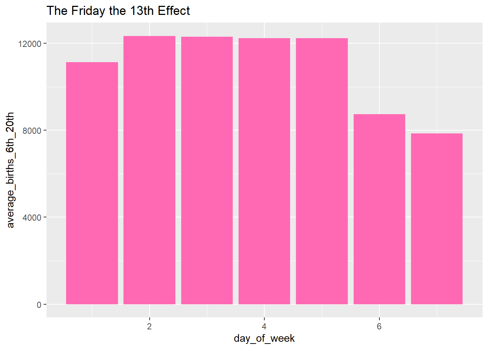
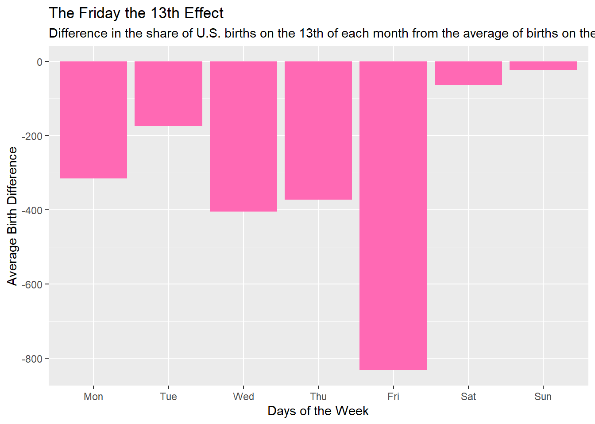
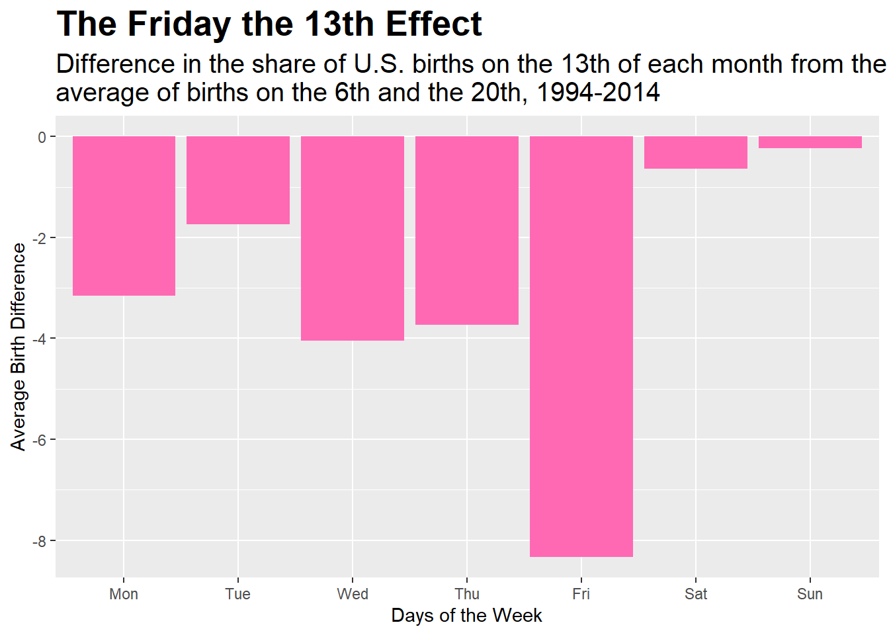
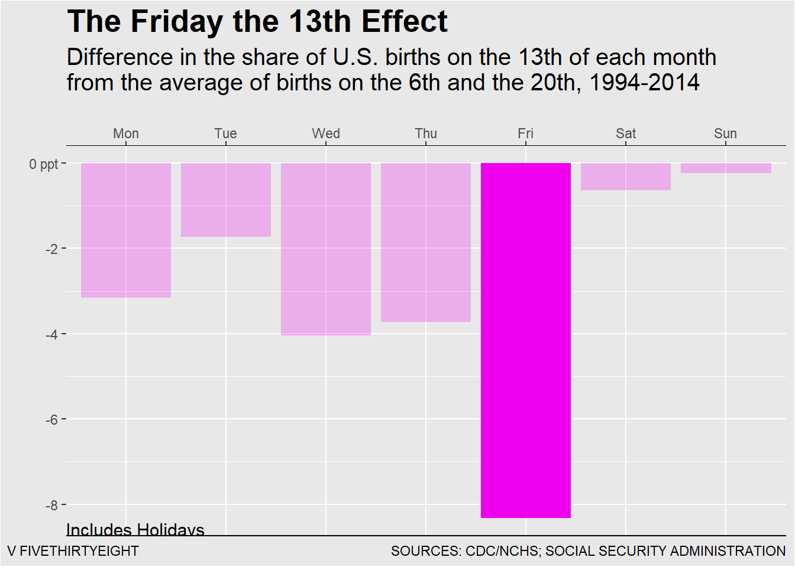

The following image is the reference I will be attempting to recreate. The graphic describes the effect of Friday the 13th on birth rates across the US from 1194-2014. The data set was found in the link above but also provided by the Centers for Disease Control and Prevention’s National Center for Health Statistics.
Loading Data
#Loading the required packages library(here)library(ggplot2)library(dplyr)library(stringr)#Reading the .csv files into the following objects US_Birth_1994_2014<-read.csv(here("presentation-exercise", "CDC_NHS.csv"))#Confirming the data is readsummary(US_Birth_1994_2014)
year month date_of_month day_of_week births
Min. :1994 Min. : 1.000 Min. : 1.00 Min. :1 Min. : 6443
1st Qu.:1996 1st Qu.: 4.000 1st Qu.: 8.00 1st Qu.:2 1st Qu.: 8844
Median :1998 Median : 7.000 Median :16.00 Median :4 Median :11615
Mean :1998 Mean : 6.524 Mean :15.73 Mean :4 Mean :10877
3rd Qu.:2001 3rd Qu.:10.000 3rd Qu.:23.00 3rd Qu.:6 3rd Qu.:12274
Max. :2003 Max. :12.000 Max. :31.00 Max. :7 Max. :14540
Cleaning the data to match the data set identified in the plots shown above. I initially attempted to clean the data without AI assistance. From the reference plot, I was able to tell which variables were being filtered and used; however, I ended up being stuck at the determining the difference.
I initially had each of the averages calculated with the summary() function, but it resulted in a single value output rather than the vector I required. I used ChatGPT 3.5 for the remainder of the cleaning process. I submitted my code and asked “How do I get the difference of the averages and get a vector?” The result added the group_by() function.
sixth_and_twentieth_day <- US_Birth_1994_2014 %>%filter(date_of_month =="6"| date_of_month =="20")average_births_6th_20th <- sixth_and_twentieth_day %>%group_by(day_of_week) %>%summarize(average_births_6th_20th =mean(births))thirteeth_day <- US_Birth_1994_2014 %>%filter(date_of_month=="13")# Calculate the share of births on the 13th of each monthbirths_13th <- thirteeth_day %>%group_by(day_of_week) %>%summarise(births =mean(births))# I then calculated the difference between the share of births on the 13th day and the average births on the 6th and 20th days for each day of the week. The following lines used ChatGPT 3.5. I initially intended to use mutate() function and the pipe function to run it in one string, but ChatGPT recommended the following. # Calculate the difference in share of births on the 13th from the average of births on the 6th and 20thdiff_share_13th <- births_13th$births - average_births_6th_20th$average_births_6th_20th# Creating the data frame with all of the variables and labels for plottingplot_data <-data.frame(day_of_week =factor(1:7, labels =c("Mon", "Tue", "Wed", "Thu", "Fri", "Sat", "Sun")),diff_share_13th = diff_share_13th)
Visualization + Prompts
I initially plotted p1 to assist me in visualizing and helping with the cleaning process. After the 2nd attempt with the cleaned data, I used ChatGPT for certain factors listed below.
# My first attempt at creating the bar graph while cleaning the data. I knew the day_of_week was on the x-axis and the the y-axis had some numeric value representing some average in birth number. Plotting this allowed me to see what I was missing. p1 <-ggplot(average_births_6th_20th, aes(x = day_of_week, y = average_births_6th_20th)) +geom_bar(stat ="identity", fill ="hotpink") +labs(title ="The Friday the 13th Effect")plot(p1)

# My second attempt with the newly created Difference object. I can tell I am getting closer, but I want to change the y-axis scale to reflect ppt. I also want to ensure that the full subtitle can be seen, and that the Friday bar is highlighted. p2 <-ggplot(plot_data, aes(x = day_of_week, y = diff_share_13th)) +geom_bar(stat ="Identity", fill ="hotpink") +labs(title ="The Friday the 13th Effect",subtitle ="Difference in the share of U.S. births on the 13th of each month from the average of births on the 6th and the 20th, 1994-2014",x ="Days of the Week",y ="Average Birth Difference" ) plot(p2)

# My third attempt. Using ChatGPT, I adjusted the y-axis and changed the title and subtitle format.This was performed by asking how I can format the titles as if it can be wrapped. I also asked it to change the plot so that the y-axis is scaled by percentage point (ppt)# Wrap the subtitle text to fit within the plot areawrapped_subtitle <-str_wrap("Difference in the share of U.S. births on the 13th of each month from the average of births on the 6th and the 20th, 1994-2014", width =75)p3 <-ggplot(plot_data, aes(x = day_of_week, y = diff_share_13th)) +geom_bar(stat ="Identity", fill ="hotpink") +labs(title ="The Friday the 13th Effect",subtitle = wrapped_subtitle,x ="Days of the Week",y ="Average Birth Difference" ) +theme(plot.title =element_text(hjust =0, size=20, face="bold"), plot.subtitle =element_text(size =15))# Adjust the y-axis scale to display in pptp3 +scale_y_continuous(labels =function(x) paste0(x /100))

# My fourth attempt. # Add column in data frame called "alpha" to reflect alpha value for transparencyplot_data$alpha <-ifelse(plot_data$day_of_week =="Fri", 1, 0.25) # Set alpha to 1 for Friday, 0.5 for others# Plot with ggplot. I attempted to use ChatGPT to adjust the x-axis labels but was unable to do so. I found the answer in another website, I mentioned above. I needed to flip the x-axis labels to the top and change the color of the bars. I also used ChatGPT to make the other columns more transparent. This is shown in the alpha column.Alpha value is included for transparency. the axis scales are adjusted, and the background is changed so the grid and plot background matches. The color matching is performed by eye with the link shown above as reference. #Reintroduced wrapped_subtitle with different width. Moving the xlabels to the top messed with the format a bitwrapped_subtitle <-str_wrap("Difference in the share of U.S. births on the 13th of each month from the average of births on the 6th and the 20th, 1994-2014", width =65)#Plot with ggplotp4 <-ggplot(plot_data, aes(x = day_of_week, y = diff_share_13th, fill ="color")) +geom_bar(stat ="identity", alpha = plot_data$alpha) +scale_fill_manual(values =c("color"="magenta2"), guide =FALSE) +labs(title ="The Friday the 13th Effect",subtitle = wrapped_subtitle,x ="",y ="") +theme(plot.title =element_text(hjust =0, size =20, face ="bold"), plot.subtitle =element_text(hjust =0, size =15), panel.background =element_rect(fill ="grey91"),plot.background =element_rect(fill ="grey91"))+scale_y_continuous(labels =function(x) ifelse(x ==0, "0 ppt", paste0(x /100))) +#I also included the "O ppt" to replace the value 0 on the plot to match the referencescale_x_discrete(position ="top") #View Plotplot(p4)
# Attempt 5. Added the lines and caption to the plot. Used chatgpt by asking how to include lines. Discovered the geom-segment() and annotate() function.p5 <-ggplot(plot_data, aes(x = day_of_week, y = diff_share_13th, fill ="color")) +geom_bar(stat ="identity", alpha = plot_data$alpha) +scale_fill_manual(values =c("color"="magenta2"), guide =FALSE) +labs(title ="The Friday the 13th Effect",subtitle = wrapped_subtitle,x ="",y ="",caption ="V FIVETHIRTYEIGHT SOURCES: CDC/NCHS; SOCIAL SECURITY ADMINISTRATION")+theme(plot.title =element_text(hjust =0, size =20, face ="bold"), plot.subtitle =element_text(hjust =0, size =15), panel.background =element_rect(fill ="grey91"),plot.background =element_rect(fill ="grey91")) +scale_y_continuous(labels =function(x) ifelse(x ==0, "0 ppt", paste0(x /100))) +scale_x_discrete(position ="top") +annotate("segment", x =Inf, xend =-Inf, y =Inf, yend =Inf, color ="black")+geom_segment(aes(x =-Inf, xend =Inf, y =-Inf, yend =-Inf), color ="black")+annotate("text", x =-Inf, y =-Inf, hjust =0, vjust =0, label ="Includes Holidays", size =4)#View Plotplot(p5)

#I'm satisfied with the plot, and proceeds to save itggsave("my_plot.png", plot = p5)
Table
The following show a table of the data after it’s been processed, cleaned, and calculated in the above sections. These values were used in the plots.
library(flextable)# Suppose you want to remove the 'diff_share_13th' variable from the plot_data data frameplot_data <- plot_data[, !(names(plot_data) %in%"alpha")]# Suppose you want to change the column names of plot_data to "Day" and "Difference"names(plot_data) <-c("Day of the Week", "Difference in Birth Numbers")# Create the flextable objectflex_table <-flextable(plot_data)# Add some styling if neededflex_table <- flex_table %>%align(align ="center", part ="all") %>%set_table_properties(width = .6)# Print the tableflex_table
Day of the Week
Difference in Birth Numbers
Mon
-315.17647
Tue
-173.59375
Wed
-404.50000
Thu
-372.92105
Fri
-832.84375
Sat
-63.80556
Sun
-23.05882
The above table was created from the following data set shown below in the tables. These tables were created by selecting the columns in the data set that had date_of_month = “13”, “6”, and “20”. The data was then summarized individually in 13th and together in 6th and 20th by the day_of_week variable and the mean of the birth numbers. This was all performed in the Data Cleaning section.
# Suppose you want to change the column names of plot_data to "Day" and "Difference"names(average_births_6th_20th) <-c("Day of the Week", "Difference in Birth Numbers")# Create the flextable objecttable1 <-flextable(average_births_6th_20th)# Add some styling if neededtable1 <- table1 %>%align(align ="center", part ="all") %>%set_table_properties(width = .6)# Print the tabletable1
Day of the Week
Difference in Birth Numbers
1
11,127.647
2
12,342.031
3
12,296.441
4
12,235.816
5
12,237.656
6
8,731.750
7
7,853.588
# Suppose you want to change the column names of plot_data to "Day" and "Difference"names(births_13th) <-c("Day of the Week", "Difference in Birth Numbers")# Create the flextable objecttable2 <-flextable(births_13th)# Add some styling if neededtable2 <- table2 %>%align(align ="center", part ="all") %>%set_table_properties(width = .6)# Print the tabletable2
Day of the Week
Difference in Birth Numbers
1
10,812.471
2
12,168.438
3
11,891.941
4
11,862.895
5
11,404.812
6
8,667.944
7
7,830.529
Conclusion
The final Results are shown below. The first image is the reference and second image is the recreated plot. There is a slight difference in results, as I was unable to exclude the holidays data which was performed for the reference.